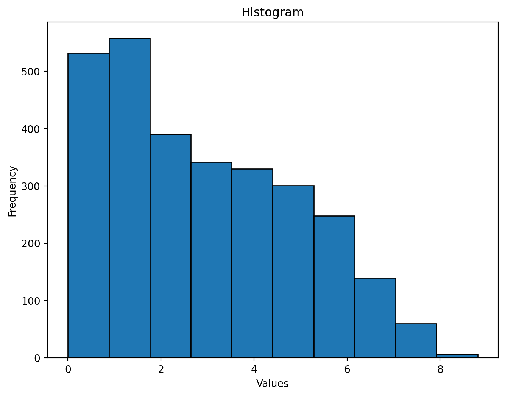
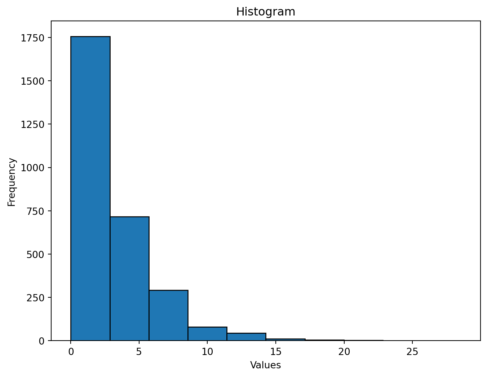

#importing packages
import pandas as pd
import matplotlib.pyplot as plt
import numpy as np
nri_data=r"C:\Users\aserilevi\code\PRGS-Intro-to-Machine-Learning\data\raw\National Risk Index (NRI) County Level Data\NRI_Table_Counties.csv"
nri_df=pd.read_csv(nri_data)
nri_df['STCOFIPS'] = nri_df['STCOFIPS'].astype(str)
stcofips_column = 'STCOFIPS'Homework 2
Due Date: 2022-10-16 at 8:30 AM PT
Name: Adam Seri-Levi
For this assignment, you will practice downloadings, cleaning, and analyzing data from the National Risk Index (NRI) and the CDC Social Vulnerability Index (SVI).
Preparation
- Create a ‘data’ folder in the root directory of your repository.
- Inside the ‘data’ folder, create a ‘raw’ folder.
- Add and commit a ‘.gitignore’ file to the root directory of this repository that excludes all contents of the ‘data’ folder.
- Download the county-level NRI and SVI data for the entire United States. Place the data in the ‘data/raw’ folder.
- In the repository README, provide a brief (1-2 sentence) description of each file in the ‘data’ folder and a link to the original source of the data.
Task 1 - NRI Data Cleaning
1. Import the NRI data. Ensure that the FIPS code variable (‘STCOFIPS’) is correctly identified as a string / character variable. Otherwise, the leading zeros will be removed.
2. Subset the NRI data to include only the 5-digit state/county FIPS code and all colums ending with ‘_AFREQ’ and ‘_RISKR’. Each of these columns represents a different hazard type.
#Assigning the stcofips column to a variable
stcofips_column = 'STCOFIPS'
# Filter columns that end with '_AFREQ' or '_RISKR'
filtered_nri = nri_df.filter(regex='(_AFREQ|_RISKR)$').columns
# Include the STCOFIPS column
filtered_nri = [stcofips_column] + list(filtered_nri)
# Subset the DataFrame with only columns of interest
subset_nri = nri_df[filtered_nri]
# Restrict to rows where STCOFIPS has exactly 5 digits
subset_nri = subset_nri[subset_nri[stcofips_column].astype(str).str.match(r'^\d{5}$')]3. Create a table / dataframe that, for each hazard type, shows the number of missing values in the ‘_AFREQ’ and ‘_RISKR’ columns.
# Creating a function that counts missing values for each column in a dataFrame
def count_missing(df):
return df.isna().sum()
# using the function to count missing in our subsetted dataframe
count_missing_subset_nri=count_missing(subset_nri)
# dropping the STCOFIPS column
count_missing_subset_nri = count_missing_subset_nri.drop('STCOFIPS')
# converting to dataframe
count_missing_subset_nri= pd.DataFrame(count_missing_subset_nri)
print(count_missing_subset_nri) 0
AVLN_AFREQ 2789
AVLN_RISKR 0
CFLD_AFREQ 2386
CFLD_RISKR 0
CWAV_AFREQ 0
CWAV_RISKR 0
DRGT_AFREQ 7
DRGT_RISKR 0
ERQK_AFREQ 0
ERQK_RISKR 0
HAIL_AFREQ 7
HAIL_RISKR 0
HWAV_AFREQ 0
HWAV_RISKR 0
HRCN_AFREQ 765
HRCN_RISKR 0
ISTM_AFREQ 160
ISTM_RISKR 0
LNDS_AFREQ 10
LNDS_RISKR 0
LTNG_AFREQ 93
LTNG_RISKR 0
RFLD_AFREQ 0
RFLD_RISKR 0
SWND_AFREQ 7
SWND_RISKR 0
TRND_AFREQ 7
TRND_RISKR 0
TSUN_AFREQ 2829
TSUN_RISKR 0
VLCN_AFREQ 2843
VLCN_RISKR 0
WFIR_AFREQ 88
WFIR_RISKR 0
WNTW_AFREQ 0
WNTW_RISKR 04. Show the cross-tabulation of the ‘AVLN_AFREQ’ and ‘AVLN_RISKR’ columns (including missing values). What do you observe?
#Creating a new column in the subset_nri dataframe that indicates where the value in AVLN_AFREQ is missing or observed
subset_nri['AVLN_AFREQ_MISSING'] = np.where(subset_nri['AVLN_AFREQ'].isna(),'Missing', 'Observed')
'''
##Checking that it worked
print(subset_nri[subset_nri['AVLN_AFREQ_MISSING'] == 'Observed'][['AVLN_AFREQ_MISSING', 'AVLN_AFREQ']])
'''
#cross tabulating, I noticed that there are no missing valuse except for wehn "AVLN_RISK" equals 'Not Applicable'. When it equals 'Not Applicable', "AVLN_RISK" is always missing, which makes sense since there is no risk associated when there isn't an applicable hazard
crosstab_df=pd.crosstab(
subset_nri['AVLN_AFREQ_MISSING'],
subset_nri['AVLN_RISKR'],
dropna=False
)
print(crosstab_df)AVLN_RISKR Not Applicable Relatively High Relatively Low \
AVLN_AFREQ_MISSING
Missing 2789 0 0
Observed 0 9 35
AVLN_RISKR Relatively Moderate Very High Very Low
AVLN_AFREQ_MISSING
Missing 0 0 0
Observed 14 5 62 5. Assuming that a risk that is “not applicable” to a county has an annualized frequency of 0, impute the relevant missing values in the ‘_AFREQ’ columns with 0.
#Identifying which columns ends with _AFREQ and _RISKR and assigning each to a variable
#I used chatgpt using the following prompt: "How to impute a value for multiple columns that follow a simialr naming structure based on the value in another column"
afreq_columns = [col for col in subset_nri.columns if col.endswith('_AFREQ')]
riskr_columns = [col for col in subset_nri.columns if col.endswith('_RISKR')]
#Impute zero in '_AFREQ' columns where the corresponding '_RISKR'columns are 'Not Applicable'
for riskr_columns, afreq_columns in zip(riskr_columns, afreq_columns):
subset_nri.loc[subset_nri[riskr_columns] == 'Not Applicable', afreq_columns] = 0
'''
##Can check that this works by running the previous python cell and then running this one again, there should be ZERO counts of "Missing" in the cross tabulation for 'Not Applicable'
print(crosstab_df)
''''\n##Can check that this works by running the previous python cell and then running this one again, there should be ZERO counts of "Missing" in the cross tabulation for \'Not Applicable\'\nprint(crosstab_df)\n'Task 2 - SVI Data Cleaning
1. Import the SVI data. Ensure that the FIPS code is correctly identified as a string / character
variable. Otherwise, the leading zeros will be removed. 1. Subset the SVI data to include
only the following columns:
ST, STATE, ST_ABBR, STCNTY, COUNTY, FIPS, LOCATION, AREA_SQMI, E_TOTPOP, EP_POV150, EP_UNEMP, EP_HBURD, EP_NOHSDP, EP_UNINSUR, EP_AGE65, EP_AGE17, EP_DISABL, EP_SNGPNT, EP_LIMENG, EP_MINRTY, EP_MUNIT, EP_MOBILE, EP_CROWD, EP_NOVEH, EP_GROUPQ, EP_NOINT, EP_AFAM, EP_HISP, EP_ASIAN, EP_AIAN, EP_NHPI, EP_TWOMORE, EP_OTHERRACE
svi_data= r"C:\Users\aserilevi\code\PRGS-Intro-to-Machine-Learning\data\raw\Social Vulnerability Index (SVI) County Level Data\SVI_2022_US_county.csv"
svi_df=pd.read_csv(svi_data)
svi_df['FIPS'] = svi_df['FIPS'].astype(str)
#identifying the columns I'm going to filter by
svi_columns = columns_to_select = [
'ST', 'STATE', 'ST_ABBR', 'STCNTY', 'COUNTY', 'FIPS', 'LOCATION', 'AREA_SQMI',
'E_TOTPOP', 'EP_POV150', 'EP_UNEMP', 'EP_HBURD', 'EP_NOHSDP', 'EP_UNINSUR', 'EP_AGE65',
'EP_AGE17', 'EP_DISABL', 'EP_SNGPNT', 'EP_LIMENG', 'EP_MINRTY', 'EP_MUNIT', 'EP_MOBILE',
'EP_CROWD', 'EP_NOVEH', 'EP_GROUPQ', 'EP_NOINT', 'EP_AFAM', 'EP_HISP', 'EP_ASIAN',
'EP_AIAN', 'EP_NHPI', 'EP_TWOMORE', 'EP_OTHERRACE'
]
#filtering the columns in the svi table
filtered_svi=svi_df[svi_columns]
#print result
print(filtered_svi) ST STATE ST_ABBR STCNTY COUNTY FIPS \
0 1 Alabama AL 1001 Autauga County 1001
1 1 Alabama AL 1003 Baldwin County 1003
2 1 Alabama AL 1005 Barbour County 1005
3 1 Alabama AL 1007 Bibb County 1007
4 1 Alabama AL 1009 Blount County 1009
... .. ... ... ... ... ...
3139 56 Wyoming WY 56037 Sweetwater County 56037
3140 56 Wyoming WY 56039 Teton County 56039
3141 56 Wyoming WY 56041 Uinta County 56041
3142 56 Wyoming WY 56043 Washakie County 56043
3143 56 Wyoming WY 56045 Weston County 56045
LOCATION AREA_SQMI E_TOTPOP EP_POV150 ... \
0 Autauga County, Alabama 594.454786 58761 20.2 ...
1 Baldwin County, Alabama 1589.861817 233420 18.3 ...
2 Barbour County, Alabama 885.007619 24877 37.7 ...
3 Bibb County, Alabama 622.469286 22251 29.0 ...
4 Blount County, Alabama 644.890376 59077 22.9 ...
... ... ... ... ... ...
3139 Sweetwater County, Wyoming 10426.975770 42079 18.0 ...
3140 Teton County, Wyoming 3996.846933 23346 10.5 ...
3141 Uinta County, Wyoming 2081.719807 20546 15.2 ...
3142 Washakie County, Wyoming 2238.678265 7725 19.1 ...
3143 Weston County, Wyoming 2398.003893 6870 19.8 ...
EP_NOVEH EP_GROUPQ EP_NOINT EP_AFAM EP_HISP EP_ASIAN EP_AIAN \
0 4.0 0.9 10.9 19.6 3.2 1.1 0.1
1 2.3 1.5 10.9 8.3 4.8 0.9 0.2
2 11.7 12.0 31.8 46.9 4.8 0.5 0.3
3 7.5 6.4 20.2 20.7 2.9 0.3 0.1
4 4.8 1.0 16.9 1.2 9.7 0.2 0.1
... ... ... ... ... ... ... ...
3139 2.0 1.2 10.6 1.2 16.2 0.7 0.9
3140 1.9 3.9 10.4 0.6 15.2 1.3 0.1
3141 3.7 1.1 8.5 0.2 9.9 0.2 0.1
3142 4.7 2.0 14.1 0.0 14.3 0.4 0.3
3143 3.4 5.2 19.6 0.1 3.5 0.2 1.5
EP_NHPI EP_TWOMORE EP_OTHERRACE
0 0.0 3.3 0.2
1 0.0 3.1 0.4
2 0.0 1.8 1.2
3 0.0 1.7 0.1
4 0.2 2.8 0.1
... ... ... ...
3139 0.1 2.2 0.9
3140 0.1 2.3 0.7
3141 0.0 2.9 0.0
3142 0.0 3.2 0.3
3143 0.7 8.3 0.1
[3144 rows x 33 columns]2. Create a table / dataframe that shows the number of missing values in each column. (Hint: if you wrote a function for Task 1, you can reuse it here.)
#using the function made in the previous task
svi_missing=count_missing(filtered_svi)
#turning it into a dataframe
svi_missing_df=pd.DataFrame(svi_missing)
#print result
print(svi_missing_df) 0
ST 0
STATE 0
ST_ABBR 0
STCNTY 0
COUNTY 0
FIPS 0
LOCATION 0
AREA_SQMI 0
E_TOTPOP 0
EP_POV150 0
EP_UNEMP 0
EP_HBURD 0
EP_NOHSDP 0
EP_UNINSUR 0
EP_AGE65 0
EP_AGE17 0
EP_DISABL 0
EP_SNGPNT 0
EP_LIMENG 0
EP_MINRTY 0
EP_MUNIT 0
EP_MOBILE 0
EP_CROWD 0
EP_NOVEH 0
EP_GROUPQ 0
EP_NOINT 0
EP_AFAM 0
EP_HISP 0
EP_ASIAN 0
EP_AIAN 0
EP_NHPI 0
EP_TWOMORE 0
EP_OTHERRACE 0Task 3 - Data Merging
1. Identify any FIPS codes that are present in the NRI data but not in the SVI data and vice versa. Describe any discrepancies and possible causes? What to these discrepancies, if any, mean for interpreting results based on the merged dataset moving forward?
#The NRI dataset has 3 FIPS columns, one for state, one for county, and one for a combination of both, called state county (STCO). The SVI data has one column named FIPS and another column named STCNTY (State County) which can be interpreted in the same way as the STCOFIPS column from the NRI data and we should keep this in mind moving forward as we can use this as a key to merge our datasets2. Merge the NRI and SVI data on the FIPS code. Use an outer join to keep all counties in the final dataset.
##merging the subsetted and filtered dataframes on the FIPS and STCOFIPS keys
merged_nri_svi=pd.merge(subset_nri, filtered_svi, how='outer', left_on='STCOFIPS', right_on='FIPS')
#print result
print(merged_nri_svi) STCOFIPS AVLN_AFREQ AVLN_RISKR CFLD_AFREQ CFLD_RISKR \
0 10001 0.0 Not Applicable 3.687000 Relatively Moderate
1 10003 0.0 Not Applicable 3.687000 Relatively Moderate
2 10005 0.0 Not Applicable 3.654749 Relatively High
3 NaN NaN NaN NaN NaN
4 NaN NaN NaN NaN NaN
... ... ... ... ... ...
3227 NaN NaN NaN NaN NaN
3228 NaN NaN NaN NaN NaN
3229 NaN NaN NaN NaN NaN
3230 NaN NaN NaN NaN NaN
3231 NaN NaN NaN NaN NaN
CWAV_AFREQ CWAV_RISKR DRGT_AFREQ DRGT_RISKR ERQK_AFREQ ... \
0 0.0 No Rating 3.904782 Relatively Low 0.000330 ...
1 0.0 No Rating 5.667769 Relatively Low 0.000399 ...
2 0.0 No Rating 2.620629 Relatively Low 0.000247 ...
3 NaN NaN NaN NaN NaN ...
4 NaN NaN NaN NaN NaN ...
... ... ... ... ... ... ...
3227 NaN NaN NaN NaN NaN ...
3228 NaN NaN NaN NaN NaN ...
3229 NaN NaN NaN NaN NaN ...
3230 NaN NaN NaN NaN NaN ...
3231 NaN NaN NaN NaN NaN ...
EP_NOVEH EP_GROUPQ EP_NOINT EP_AFAM EP_HISP EP_ASIAN EP_AIAN EP_NHPI \
0 6.8 2.5 10.6 25.5 7.8 2.3 0.3 0.0
1 7.0 2.7 8.2 24.7 10.8 5.8 0.1 0.0
2 3.6 1.1 11.5 10.7 9.5 1.3 0.3 0.0
3 4.0 0.9 10.9 19.6 3.2 1.1 0.1 0.0
4 2.3 1.5 10.9 8.3 4.8 0.9 0.2 0.0
... ... ... ... ... ... ... ... ...
3227 5.0 1.6 10.7 1.4 11.8 1.4 0.1 0.1
3228 6.1 2.0 9.0 4.4 10.9 2.5 0.0 0.0
3229 11.1 4.3 9.5 12.4 18.8 4.2 0.1 0.0
3230 7.3 4.7 9.9 5.1 11.4 3.8 0.4 0.0
3231 5.8 1.3 6.5 9.6 20.1 5.2 0.1 0.0
EP_TWOMORE EP_OTHERRACE
0 5.1 0.4
1 3.5 0.4
2 3.3 0.4
3 3.3 0.2
4 3.1 0.4
... ... ...
3227 3.6 0.2
3228 3.8 0.4
3229 2.6 0.6
3230 4.2 0.5
3231 3.6 0.8
[3232 rows x 71 columns]3. Create a table / dataframe that shows the number of missing values in each column of the merged dataset.
#using count_missing function to county how many missing values there are in merged dataframe
missing_merged=count_missing(merged_nri_svi)
missing_merged_df=pd.DataFrame(missing_merged)
#print result
print(missing_merged_df) 0
STCOFIPS 318
AVLN_AFREQ 318
AVLN_RISKR 318
CFLD_AFREQ 318
CFLD_RISKR 318
... ...
EP_ASIAN 88
EP_AIAN 88
EP_NHPI 88
EP_TWOMORE 88
EP_OTHERRACE 88
[71 rows x 1 columns]Task 4 - Data Analysis
1. For each numerical variable in the merged dataset, plot a histogram showing the distribution of values. (Hint: write a function to make the histogram for a single variable, then use a loop or apply function to make the histograms for all numerical variables.)
#I used chatgpt by asking it how to apply a function that creates a histogram for every numerical variable in a dataframe
def plot_histogram(data, bins=10, title='Histogram', xlabel='Values', ylabel='Frequency'):
plt.figure(figsize=(8, 6))
plt.hist(data, bins=bins, edgecolor='black')
# Add title and axis labels
plt.title(title)
plt.xlabel(xlabel)
plt.ylabel(ylabel)
# Show the plot
plt.show()
'''
#checking to see if it worked
hist_test= plot_histogram(merged_nri_svi['EP_MINRTY'])
'''
#assigning a variable that is only the numerical variables in the merged dataset
selecting_numerical_variables= merged_nri_svi.select_dtypes(include=['number'])
#applying the plot_Histogram function to all the numerical variables in the merged dataset
apply_hist=selecting_numerical_variables.apply(plot_histogram)

